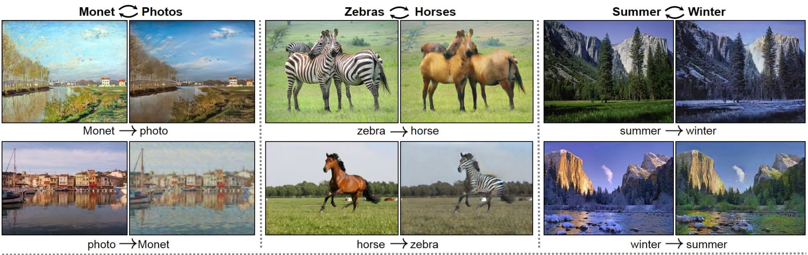

TLDR; Deepdrive has been rebuilt without GTA using Unreal Engine. Check it out!
Background - or skip to Unreal stuff
In early 2017, I worked with OpenAI to release an integration for GTAV into the Universe platform. The goal was to make one of the most complex video games available to researchers to experiment with methods like deep reinforcement learning for self-driving.
Unfortunately, we had to shut the project down as TakeTwo was not receptive to people using GTAV for this purpose.
I know that many of you had spent time with Deepdrive 1.0 and Deepdrive Universe, and am deeply sorry for not being able to continue to support your efforts. I hope that rebuilding the project on Unreal will be able to restore what you found valuable in the GTA version, and eventually do much more.
Before the Universe integration had launched, I started work with the perception team at Uber's Advanced Technologies Group. Deepdrive caught their eye as relevant experience applying deep learning to self-driving. It was also an opportunity to incorporate real world concerns back into Deepdrive, something I was grateful to Uber for supporting.
I noticed early on that the problems in simulation and in the real-world were often similar, but the solutions very different. For example, in imitation learning, you often need to reduce sampling error when training and test data are not independently and identically distributed.
In real cars this is dealt with, by "pretending" as if the left or right camera is in the center of the car and generating a corresponding corrective steering action to get back to the center. Viewpoint transformation then can interpolate between cameras to generate additional corrective labels under the assumption of an infinite horizon - i.e. flat roads.
In simulation, we can safely vary the trajectory of the car and see what an oracle path-following agent does to correct its trajectory.
So it’d be great to use simulated training in order to improve real-world performance as we can get much more accurate corrective actions. Excitingly, when we worked on verifying that agents can transfer between real and virtual environments at Uber, I found that a network which has only seen real-world data could drive in a simulated environment surprisingly well, i.e. stay in it's lane. So going the other direction is promising (virtual→real), although not something we were able to try.
I want to provide a brief side note to how this is possible as it's quite promising. Work from Finn, Levine et al., demonstrates how you can train a neural network with ideal sensors, in their case motion capture sensors, then swap out those sensors with a network which has learned to mimic them, allowing them to use solely the camera for input. Applying this idea to self-driving, we could train an agent with any state information available in the game (i.e. 3D or planning trajectories), providing we can also learn to generate that information from sensors we'll have in the real-world, i.e. cameras. This allows us to use much more information during training, drawing from essentially god-like sensors available in simulation.
The trick then becomes making the simulation realistic enough for that training to transfer to the real-world. This is where GANs and style transfer methods could help generate contextually realistic data. Below are some visual examples.
Okay, so this has become more than a brief side note, but the point is that we can essentially cheat within simulation, and get away with it by using neural networks which map the virtual world to the real world and vice versa.
Through experiences at Uber, I became familiar with the problems of real autonomous vehicles - digging into the fundamental reasons for our disengagements and riding along in test cars. This gave me a deep appreciation for the difficultly of the problem and made me increasingly excited about what an open self-driving simulator could to help make self-driving happen.
So in November, I left to do just that and began work on Deepdrive 2.0.
The move to Unreal

{kind=link}
{kind=link}
{kind=link}
{kind=link}
{kind=link}
The first step in developing Deepdrive 2.0 was choosing an engine. Of the many we evaluated, Unreal not only checked the boxes, but "felt" best to us while using it, especially in Linux. From a feature perspective Unreal is the only free, shared source, AAA engine available. Having the source is critical as we're going to need to optimize 8+ camera rendering, run faster than real-time, and possibly swap out the physics engine.
| Source | Pricing | Linux | AAA | |
| Unreal | Shared | Free with revenue cap, then 5% | ⭐⭐⭐⭐ | Yes |
| Unity | Paid access only | Free with revenue cap, then fixed monthly | ⭐⭐⭐ | Yes |
| LumberYard (CryEngine fork) | Shared | Free | No | Yes |
| CryEngine | Simulation not permitted | $9.90/mo | ⭐⭐ | Yes |
| Quake3 - ioq3 | GPL-2 | Free | ⭐? | No |
There are a lot of other engines out there, including some really interesting ones like the MIT licensed Godot, however when it comes to realism - Unity, Unreal, CryEngine and are still quite far ahead of the pack.
Example of the latest in realism. Demo at GDC 18 of real-time raytracing in Unreal.
Unreal's self-driving ecosystem
Besides Deepdrive, open source self-driving simulation projects like AirSim and Carla are also using Unreal. It’s my hope these sims can reuse components and cooperate. We have already worked with the Carla team on some synchronization functionality and it’s very exciting to see the growing community around open self-driving. In addition, the self-driving simulators at NVIDIA, Cruise, and Zoox are all built on Unreal, and there are likely more who've not yet gone public about it.
{kind=link}
NVIDIA AutoSim
Zoox's simulator
Some of the unique things about Deepdrive that sets us apart from these other projects are
- Our frame rates are higher while capturing several cameras, due to use of shared memory rather than sockets and asynchronous transfer.
- Our road surface is not flat, but hilly, curvy, and varies in width
- Our assets - the map, cars, lighting, etc… are free, come with the project, and modifiable in Unreal.
Regardless, I think it’s a benefit to everyone to have a variety of simulators available. A cross-simulator benchmark would be extremely helpful for helping test agents ability to transfer between environments, including to the real world. If you’re interested in working on this idea drop me a line.
Developing in Unreal
You don't need to develop in Unreal to use Deepdrive; you just need to write Python. However, for many projects, it will be important to be able to modify the simulation, or at least see how it works at its lowest levels.
Built-in vehicle support
For example, there are a plethora of options available in Unreal for changing the way the vehicle moves, including torque and steering response, differential, transmission, and engine settings.
Visual scripting
Adding a keybind to one of Unreal's built-in AI functions in a Blueprint.
You can also prototype ideas in Unreal very quickly thanks to blueprints, it's node-based scripting environment. Blueprints are 10x slower at runtime than C++, but it's easy to detect hotspots with Unreal's GPU and CPU profilers and reimplement slow Blueprint code in C++.
{kind=link}
{kind=link}
Unreal console
We ship our sim with the Unreal Console enabled, meaning you can call any of built-in Unreal commands straight from the game. You can also call your own C++ the same way with custom commands.
Substance
{kind=link}
We use Substance and its Unreal integration for many of our materials, which we have found to be the source of several incredibly realistic surfaces in Unreal games. Substance also makes it easy to procedurally generate your own realistic materials and textures.
Debugging workflow
{kind=link}
Unreal's debugging workflow allows you to easily break anywhere into engine code or your own code, then hot-reload C++ in your project.
Conclusion
So far, we've been very happy with Unreal Engine, a AAA game development platform with accessible and modifiable source, and a solid start at becoming the engine of choice for self-driving simulation. We look forward to using it to make self-driving accessible to everybody.
Stepping back
Creating fully autonomous cars will mean developing AI that has a grounded understanding of physics, our 3D world, and how to interact, predict, and cooperate with us. These capabilities will enable AI to understand more abstract concepts within language, read the web, and someday become more capable than humans at every job there is. It's therefore extremely important that self-driving AI be developed in the open and in a manner sensitive to the sweeping effects AI will have.
A beneficial distinction of self-driving vs other large existing AI applications (i.e. search and social) is that the privacy and secrecy concerns are minimal. This enables open development and many more people to work on the problem with a level of transparency not usually found in applied AI. In general, developing AI applications in the open is important so that people have access to the technology making an increasing number of decisions in their lives.
Deepdrive is a self-driving car simulation, but our goals extend beyond that. Our aim is to create a platform that sets a precedent for the safe development of future applied AI. The type of AI which we can all be proud to say was - created by us.